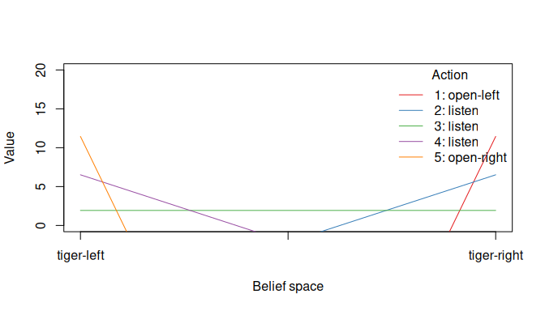
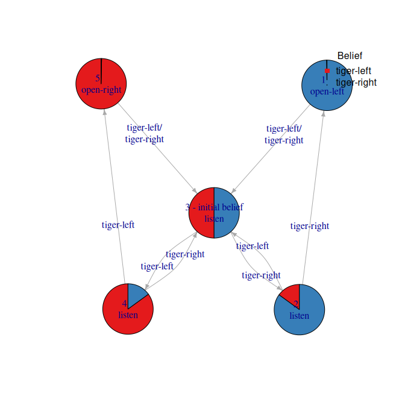

Maintainer: Michael Hahsler
Introduction
A partially observable Markov decision process (POMDP) models an agent’s decision process in which the agent cannot directly observe the environment’s state but has to rely on observations. The goal is to find an optimal policy to guide the agent’s actions.
The pomdp package (Hahsler and Cassandra 2025) provides the infrastructure to define and analyze the solutions of optimal control problems formulated as Partially Observable Markov Decision Processes (POMDP). The package uses the solvers from pomdp-solve (Cassandra 2015) available in the companion R package pomdpSolve to solve POMDPs using a variety of exact and approximate algorithms.
The package provides fast functions (using C++, sparse matrix representation, and parallelization with foreach) to perform experiments (sample from the belief space, simulate trajectories, belief update, calculate the regret of a policy). The package also interfaces to the following algorithms:
- Exact value iteration
- Enumeration algorithm (Sondik 1971; Monahan 1982).
- Two pass algorithm (Sondik 1971).
- Witness algorithm (Littman et al. 1995).
- Incremental pruning algorithm (Zhang and Liu 1996; Cassandra et al. 1997).
- Approximate value iteration
- Finite grid algorithm (Cassandra 2015), a variation of point-based value iteration for solving larger POMDPs (PBVI; see (Pineau et al. 2003)) without dynamic belief set expansion.
- SARSOP (Kurniawati et al. 2008), a point-based algorithm that approximates optimally reachable belief spaces for infinite-horizon problems (via the package sarsop).
If you are new to POMDPs then start with:
- Getting started with pomdp
- Gridworlds in pomdp
- For more derails on POMDPs read the POMDP Tutorial
To cite package ‘pomdp’ in publications use:
Hahsler M, Cassandra AR (2025). “Pomdp: A computational infrastructure for partially observable Markov decision processes.” The R Journal, 16(2), 116-133. ISSN 2073-4859. doi:10.32614/RJ-2024-021 https://doi.org/10.32614/RJ-2024-021.
@Article{,
title = {Pomdp: A computational infrastructure for partially observable Markov decision processes},
author = {Michael Hahsler and Anthony R. Cassandra},
year = {2025},
journal = {The R Journal},
volume = {16},
number = {2},
pages = {116--133},
doi = {10.32614/RJ-2024-021},
issn = {2073-4859},
}Installation
Stable CRAN version: Install from within R with
install.packages("pomdp")Current development version: Install from r-universe.
install.packages("pomdp",
repos = c("https://mhahsler.r-universe.dev",
"https://cloud.r-project.org/"))Usage
Solving the simple infinite-horizon Tiger problem.
## POMDP, list - Tiger Problem
## Discount factor: 0.75
## Horizon: Inf epochs
## Size: 2 states / 3 actions / 2 obs.
## Start: uniform
## Solved: FALSE
##
## List components: 'name', 'discount', 'horizon', 'states', 'actions',
## 'observations', 'transition_prob', 'observation_prob', 'reward',
## 'start', 'terminal_values', 'info'
sol <- solve_POMDP(model = Tiger)
sol## POMDP, list - Tiger Problem
## Discount factor: 0.75
## Horizon: Inf epochs
## Size: 2 states / 3 actions / 2 obs.
## Start: uniform
## Solved:
## Method: 'grid'
## Solution converged: TRUE
## # of alpha vectors: 5
## Total expected reward: 1.933439
##
## List components: 'name', 'discount', 'horizon', 'states', 'actions',
## 'observations', 'transition_prob', 'observation_prob', 'reward',
## 'start', 'info', 'solution'Display the value function.
plot_value_function(sol, ylim = c(0, 20))
Display the policy graph.
plot_policy_graph(sol)## Warning in rep(getparam("frame.color"), length = (nrow(coords))): partial
## argument match of 'length' to 'length.out'
## Warning in rep(getparam("size"), length = nrow(coords)): partial argument match
## of 'length' to 'length.out'
Acknowledgments
Development of this package was supported in part by the National Institute of Standards and Technology (NIST) under grant number 60NANB17D180.
References
Cassandra, Anthony R. 2015. The POMDP Page. https://www.pomdp.org.
Cassandra, Anthony R., Michael L. Littman, and Nevin Lianwen Zhang. 1997. “Incremental Pruning: A Simple, Fast, Exact Method for Partially Observable Markov Decision Processes.” UAI’97: Proceedings of the Thirteenth Conference on Uncertainty in Artificial Intelligence, 54–61.
Hahsler, Michael, and Anthony R. Cassandra. 2025. “Pomdp: A Computational Infrastructure for Partially Observable Markov Decision Processes.” The R Journal 16 (2): 116–33. https://doi.org/10.32614/RJ-2024-021.
Kurniawati, Hanna, David Hsu, and Wee Sun Lee. 2008. “SARSOP: Efficient Point-Based POMDP Planning by Approximating Optimally Reachable Belief Spaces.” In Proc. Robotics: Science and Systems.
Littman, Michael L., Anthony R. Cassandra, and Leslie Pack Kaelbling. 1995. “Learning Policies for Partially Observable Environments: Scaling Up.” Proceedings of the Twelfth International Conference on International Conference on Machine Learning (San Francisco, CA, USA), ICML’95, 362–70.
Monahan, G. E. 1982. “A Survey of Partially Observable Markov Decision Processes: Theory, Models, and Algorithms.” Management Science 28 (1): 1–16.
Pineau, Joelle, Geoff Gordon, and Sebastian Thrun. 2003. “Point-Based Value Iteration: An Anytime Algorithm for POMDPs.” Proceedings of the 18th International Joint Conference on Artificial Intelligence (San Francisco, CA, USA), IJCAI’03, 1025–30.
Sondik, E. J. 1971. “The Optimal Control of Partially Observable Markov Decision Processes.” PhD thesis, Stanford, California.
Zhang, Nevin L., and Wenju Liu. 1996. Planning in Stochastic Domains: Problem Characteristics and Approximation. HKUST-CS96-31. Hong Kong University.